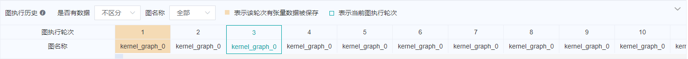

使用离线调试器

概述
本教程介绍如何在离线模式下使用调试器。
操作流程
准备Dump数据。Dump的使用方式详见使用Dump功能在Graph模式调试 ；
使用离线调试器进行调试分析。
如果需要UI页面，可以通过MindSpore Insight的离线调试器入口启动调试器。操作流程为：
1）启动MindSpore Insight，并通过启动参数指定summary-base-dir为某一次训练的summary-dir或多次训练的summary-dir的父目录（summary-dir为dump配置中的{path}的父目录）；
2）从训练列表中找到离线调试器入口，点击“离线调试器”，进入调试器页面，开始进行调试分析。
如果不需要UI页面，也可以通过离线调试器的API接口来分析。离线调试器的API详见mindinsight.debugger 。操作流程为：
1）通过
mindinsight.debugger.DumpAnalyzer实例化离线调试器，将dump_dir指定为某一次训练的dump路径（dump配置中的{path}）；2）使用离线调试器API调试分析。
如果没有特别说明，下文中的离线调试器均指的是有UI页面的离线调试器。
离线调试器环境准备
使用MindSpore的Dump功能准备离线数据。Dump的使用方式详见使用Dump功能在Graph模式调试 。
需要注意的是，一个summary-dir目录下只能存放一个dump目录。例如，某一次训练的Dump配置文件中的path为“/home/workspace/data/dump_dir”，那么本次训练dump数据保存以后，再启动其它训练时，Dump配置文件中的path就不能指定为“/home/workspace/data”的子目录。
然后，启动MindSpore Insight，指定summary-base-dir为某一次训练的summary-dir或多次训练的summary-dir的父目录，即可在UI页面中查询到离线调试器的入口。
MindSpore Insight启动命令：
mindinsight start --port {PORT} --summary-base-dir {SUMMARY_BASE_DIR} --offline-debugger-mem-limit {OFFLINE_DEBUGGER_MEMORY_LIMIT} --max-offline-debugger-session-num {MAX_OFFLINE_DEBUGGER_SESSION_NUMBER}
参数含义如下:
参数名 |
属性 |
功能描述 |
参数类型 |
默认值 |
取值范围 |
|---|---|---|---|---|---|
|
可选 |
指定Web可视化服务端口。 |
Integer |
8080 |
1~65535 |
|
必选 |
Dump配置中的{path}路径的上一层或上两层。例如，Dump配置文件中的path为“/home/workspace/data/dump_dir”，summary-base-dir可以设置为“/home/workspace/data”或“/home/workspace”。 |
String |
./ |
- |
|
可选 |
指定单个离线调试器会话内存使用上限（单位MB），当出现内存不足导致MindInght离线调试器运行问题时，需要用户根据内存情况设置。 |
Integer |
16*1024 |
6*1024~int32上限 |
|
可选 |
指定离线调试器会话数上限，会话数指的是能同时使用离线调试器调试的训练作业个数。 |
Integer |
2 |
1~2 |
更多启动参数请参考MindSpore Insight相关命令。
然后，打开MindSpore Insight页面，从离线调试器入口进入调试器界面。
图1： 离线调试器入口
离线调试器页面介绍
离线调试器界面与在线调试器大致相同。在线调试器的页面介绍详见在线调试器页面介绍 。不同的是，离线调试器会在计算图的上方显示图执行历史，并且可以重置训练轮次。
图执行历史
离线调试器在计算图的上方显示图执行历史，显示离线数据情况和轮次信息，如图2所示。在是否有数据下拉框可以选择展示全部图执行历史或者只展示有数据的执行历史。在图名称下拉框可以选择只展示对应图名称的执行历史。

图2：图执行历史
训练轮次重置
如图3所示，点击当前轮次右边的编辑图标，就会出现一个编辑框，如图4所示，输入需要重置的轮次，点击对钩符号即可。重置之后，可以查看新轮次的张量值、对已设置的监测点重新检查等。

图3： 重置训练轮次

图4：重置训练轮次编辑状态
使用离线调试器进行调试
离线调试器API使用样例
from mindinsight import debugger
from mindinsight.debugger import DumpAnalyzer
from mindinsight.debugger import Watchpoint
def test_debugger_offline():
# Init DumpAnalyzer with the dump_dir
analyzer = DumpAnalyzer("/path/to/dump_dir")
# Select the tensors generated by the code in 'lenet.py', line 49
tensors = analyzer.select_tensors(query_string="/path/to/src/of/lenet.py:49", select_by="code_stack")
# Create a watchpoint for tensors with condition TensorTooLarge, set the parameter abs_mean_gt=0.001
watchpoint1 = Watchpoint(tensors, debugger.TensorTooLargeCondition(abs_mean_gt=0.001))
# Create another watchpoint for tensors with condition TensorAllZero, set the parameter zero_percentage_ge=99.9
watchpoint2 = Watchpoint(tensors, debugger.TensorAllZeroCondition(zero_percentage_ge=99.9))
# Check the given watchpoints, the check_watchpoints function start a new process needs to be called through the main entry
hits = analyzer.check_watchpoints([watchpoint1, watchpoint2])
# Show the result
for hit in hits:
print("The hit detail is: {}".format(hit.get_hit_detail()))
tensor = hit.tensor
print("The hit tensor info is: iteration: {}, graph_name: {}, node_name: {}, rank: {}, slot: {}"
.format(tensor.iteration, tensor.node.graph_name, tensor.node.name, tensor.rank, tensor.slot))
if __name__ == "__main__":
test_debugger_offline()
注意事项
场景支持：
离线调试器暂不支持CPU场景。
离线调试器支持单机多卡场景。若要分析多机多卡的场景。需要自行把多机数据汇总到一起。
离线调试器暂不支持初始权重和计算过程溢出的检查。
离线调试器暂不支持PyNative模式。
GPU场景：
与在线调试器不同，离线调试器不支持逐节点执行。
使用离线调试器时要保证MindSpore Insight和MindSpore的版本号相同。
如果同一路径下存在多个相同张量的Dump文件，离线调试器只会显示最新的张量。
重新检查只检查当前有张量值的监测点。
调试器展示的图是优化后的最终执行图。调用的算子可能已经与其它算子融合，或者在优化后改变了名称。
如果Dump数据对象为Ascend异步Dump产生的bin文件，则解析过程中会产生npy文件，占用磁盘空间。
如果使用Ascend场景下的异步Dump数据，可以使用MindSpore Insight的数据解析工具DumpParser的
convert_all_data_to_host接口将异步Dump数据转换为.npy文件，从而提高数据分析效率。DumpParser的使用方式详见DumpParser介绍 。